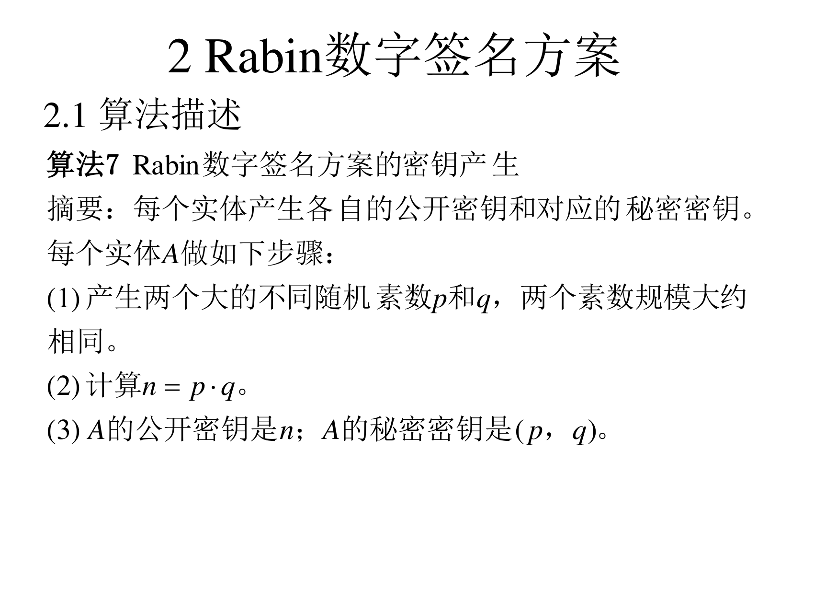
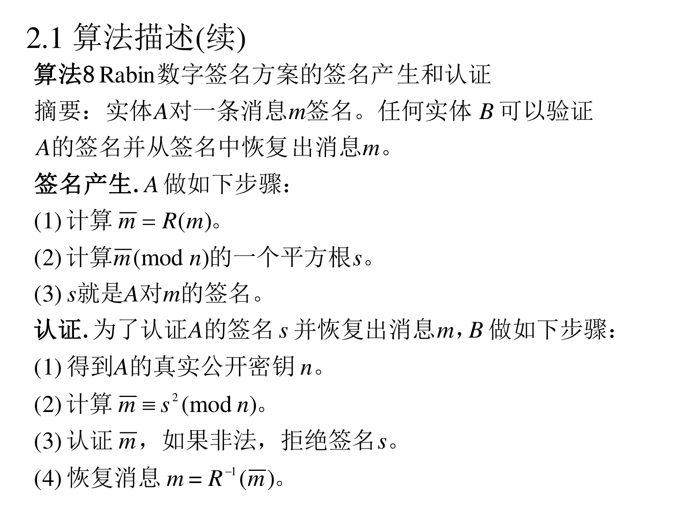
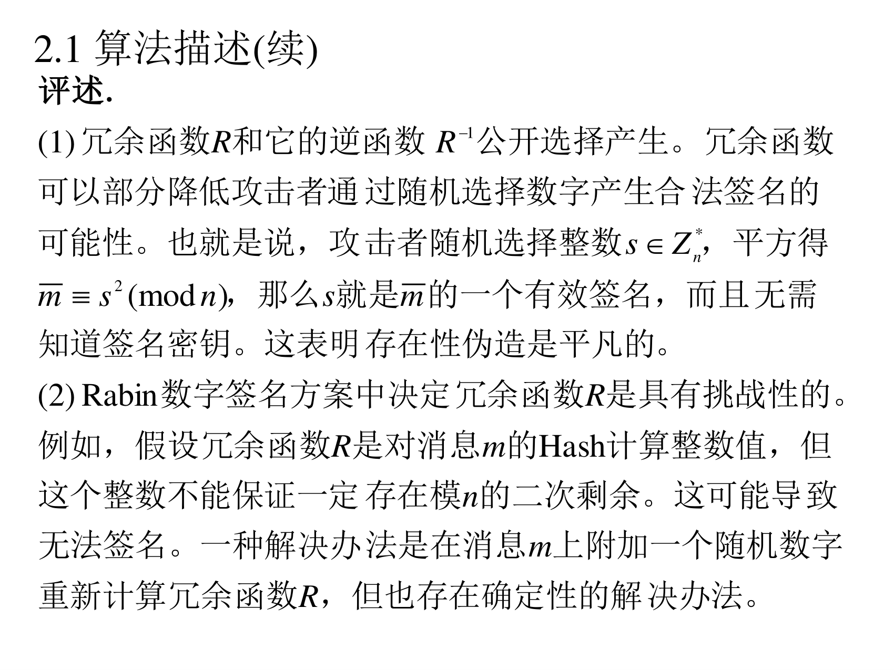
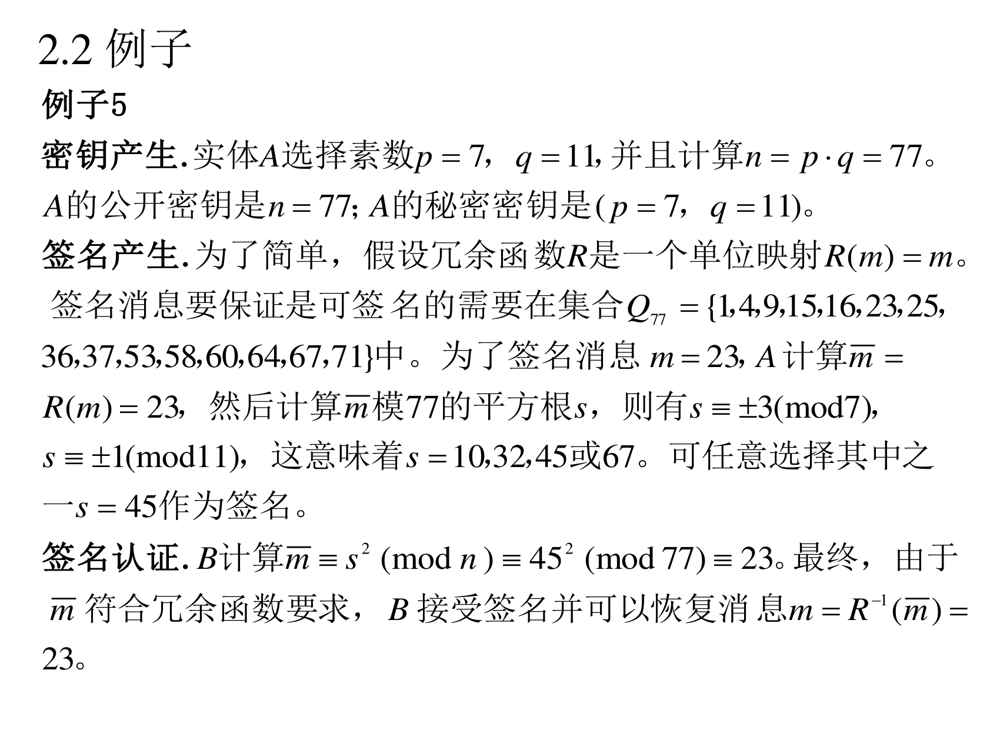

本页目录
7.2 Rabin 数字签名方案
第六讲提过 Rabin 加密有一个漂亮的性质——破解它等价于分解 n n n 。Rabin 签名同样如此，而且它比 RSA 还"轻"：验证只要一次平方 （模乘一次），比 RSA 验证还便宜。
7.2.1 算法描述
算法 7：密钥产生（PPT 第 32 页）

算法 7（Rabin 数字签名方案的密钥产生）
摘要 ：每个实体产生各自的公开密钥和对应的秘密密钥。每个实体 A 做如下步骤：
(1) 产生两个大的不同随机素数 p p p q q q (2) 计算 n = p ⋅ q n=p\cdot q n = p ⋅ q (3) A 的公开密钥是 n n n ( p , q ) (p,q) ( p , q )
翻译成人话 ：注意这里公钥只有一个数 n n n （没有 e e e 素数本身 ( p , q ) (p,q) ( p , q ) d d d
算法 8：签名与认证（PPT 第 33 页）

算法 8（Rabin 数字签名方案的签名产生和认证）
摘要 ：实体 A 对一条消息 m m m m m m 签名产生. A 做如下步骤：
(1) 计算 m ‾ = R ( m ) \overline{m}=R(m) m = R ( m ) (2) 计算 m ‾ ( m o d n ) \overline{m}\pmod n m ( mod n ) 平方根 s s s (3) s s s m m m 认证. 为了认证 A 的签名 s s s m m m (1) 得到 A 的真实公开密钥 n n n (2) 计算 m ‾ ≡ s 2 ( m o d n ) \overline{m}\equiv s^{2}\pmod n m ≡ s 2 ( mod n ) (3) 认证 m ‾ \overline{m} m s s s (4) 恢复消息 m = R − 1 ( m ‾ ) m=R^{-1}(\overline{m}) m = R − 1 ( m )
注意两个和 RSA 的巨大差别 ：
签名是开平方 （而不是求 d d d p , q p,q p , q n n n n n n 验证只要一次平方 s 2 m o d n s^2\bmod n s 2 mod n 比 RSA 的 s e s^e s e （尤其 e e e
评述（PPT 第 34–35 页）

(1) 冗余函数 R R R R − 1 R^{-1} R − 1 s ∈ Z n ∗ s\in\mathbb{Z}_n^{*} s ∈ Z n ∗ m ‾ ≡ s 2 ( m o d n ) \overline{m}\equiv s^{2}\pmod n m ≡ s 2 ( mod n ) s s s m ‾ \overline{m} m 无需知道签名密钥 。这表明存在性伪造是平凡的 。
(2) Rabin 数字签名方案中决定冗余函数 R R R 具有挑战性的 。例如，假设冗余函数 R R R m m m 不能保证一定存在模 n n n 。这可能导致无法签名 。一种解决办法是在消息 m m m R R R
(3) Rabin 数字签名方案中应该涉及到判断消息的平方根是否存在 （例如，使用 Legendre 符号，等价于少量的模乘运算）和一次模 n n n ，所以，Rabin 数字签名与同尺寸的 RSA 数字签名方案比较，增加的计算量并不显著 。同样，在 RSA 数字签名方案选择小验证密钥时，Rabin 数字签名方案验证签名相对 RSA 数字签名方案减少的计算量也不明显 。
翻译成人话 （逐条）：
(1) "存在性伪造平凡"什么意思 ：随手取一个 s s s s 2 m o d n = m ‾ s^2\bmod n=\overline m s 2 mod n = m ( s , m ‾ ) (s,\overline m) ( s , m ) 根本不用私钥 。所以如果只用"能不能验证通过"来判断，任何人都是伪造者。防御只能靠 R R R （顺手撞上的 m ‾ \overline m m 理论安全不等于工程安全，必须靠填充。 (2) 冗余函数的难点 ：为了能签名，m ‾ = R ( m ) \overline m=R(m) m = R ( m ) 是模 n n n （否则开平方无解）。如果 R R R 1 / 4 1/4 1/4 在消息后面附加随机数再 Hash，直到 m ‾ \overline m m （这样每次签名都要试几次；签名变成概率性的）。(3) 性能取舍 ：签名多了一步"判断 + 开平方"，验证只要一次平方。和 RSA（用大 e e e 所以 Rabin 的真正卖点是"安全性可证明"，不是"快"。
7.2.2 例子 5
（PPT 第 36 页）

例子 5
密钥产生. 实体 A 选择素数 p = 7 p=7 p = 7 q = 11 q=11 q = 11 n = p ⋅ q = 77 n=p\cdot q=77 n = p ⋅ q = 77 n = 77 n=77 n = 77 ( p = 7 , q = 11 ) (p=7,q=11) ( p = 7 , q = 11 ) 签名产生. 为了简单，假设冗余函数 R R R R ( m ) = m R(m)=m R ( m ) = m
Q 77 = { 1 , 4 , 9 , 15 , 16 , 23 , 25 , 36 , 37 , 53 , 58 , 60 , 64 , 67 , 71 } Q_{77}=\{1,4,9,15,16,23,25,36,37,53,58,60,64,67,71\} Q 77 = { 1 , 4 , 9 , 15 , 16 , 23 , 25 , 36 , 37 , 53 , 58 , 60 , 64 , 67 , 71 } m = 23 m=23 m = 23 m ‾ = R ( m ) = 23 \overline{m}=R(m)=23 m = R ( m ) = 23 m ‾ \overline{m} m s s s s ≡ ± 3 ( m o d 7 ) s\equiv\pm3\pmod 7 s ≡ ± 3 ( mod 7 ) s ≡ ± 1 ( m o d 11 ) s\equiv\pm1\pmod{11} s ≡ ± 1 ( mod 11 ) s = 10 , 32 , 45 s=10,32,45 s = 10 , 32 , 45 67 67 67 s = 45 s=45 s = 45 签名认证. B 计算 m ‾ ≡ s 2 ( m o d n ) ≡ 4 5 2 ( m o d 77 ) ≡ 23 \overline{m}\equiv s^{2}\pmod n\equiv45^{2}\pmod{77}\equiv23 m ≡ s 2 ( mod n ) ≡ 4 5 2 ( mod 77 ) ≡ 23 m ‾ \overline{m} m m = R − 1 ( m ‾ ) = 23 m=R^{-1}(\overline{m})=23 m = R − 1 ( m ) = 23
手把手复现 ：
第一步：什么是 Q 77 Q_{77} Q 77
Q n Q_n Q n 模 n n n "：m ‾ \overline m m Z n ∗ \mathbb{Z}_n^{*} Z n ∗ n = 77 = 7 × 11 n=77=7\times11 n = 77 = 7 × 11 φ ( 77 ) = 60 \varphi(77)=60 φ ( 77 ) = 60 n = p q n=pq n = pq 2 × 2 = 4 2\times2=4 2 × 2 = 4 n n n
本讲义枚举验证过：Q 77 Q_{77} Q 77 11 , 14 , 22 , 44 11,14,22,44 11 , 14 , 22 , 44 含因子 7 或 11 的数不在其中，因为它们不在单位群里）。
第二步：为什么 23 有 4 个平方根
23 23 23 23 m o d 7 = 2 23\bmod7=2 23 mod 7 = 2 3 2 = 9 ≡ 2 3^2=9\equiv2 3 2 = 9 ≡ 2 4 2 ≡ 2 4^2\equiv2 4 2 ≡ 2 23 m o d 11 = 1 23\bmod{11}=1 23 mod 11 = 1 1 2 = 1 1^2=1 1 2 = 1
在模 7 下：s ≡ ± 3 ( m o d 7 ) s\equiv\pm3\pmod7 s ≡ ± 3 ( mod 7 )
在模 11 下：s ≡ ± 1 ( m o d 11 ) s\equiv\pm1\pmod{11} s ≡ ± 1 ( mod 11 )
两个模各两个选择，组合起来用 CRT 就是 4 个解 ：
组合
s m o d 7 s\bmod 7 s mod 7 s m o d 11 s\bmod {11} s mod 11 s s s
1
3
1
45（45 m o d 7 = 3 45\bmod7=3 45 mod 7 = 3 45 m o d 11 = 1 45\bmod11=1 45 mod 11 = 1
2
3
−1
67（67 m o d 7 = 4 ≡ − 3 67\bmod7=4\equiv-3 67 mod 7 = 4 ≡ − 3
3
−3
1
10
4
−3
−1
32
本讲义直接枚举验证：x 2 ≡ 23 ( m o d 77 ) x^2\equiv23\pmod{77} x 2 ≡ 23 ( mod 77 ) { 10 , 32 , 45 , 67 } \{10,32,45,67\} { 10 , 32 , 45 , 67 } "四选一"就是 Rabin 的麻烦：签名结果不唯一 （RSA 签名是唯一的）。
第三步：验证
4 5 2 = 2025 , 2025 − 26 × 77 = 2025 − 2002 = 23 ⇒ 4 5 2 ≡ 23 ( m o d 77 ) ✔ 45^2=2025,\qquad 2025-26\times77=2025-2002=23\ \Rightarrow\ 45^2\equiv23\pmod{77}\ ✔ 4 5 2 = 2025 , 2025 − 26 × 77 = 2025 − 2002 = 23 ⇒ 4 5 2 ≡ 23 ( mod 77 ) ✔